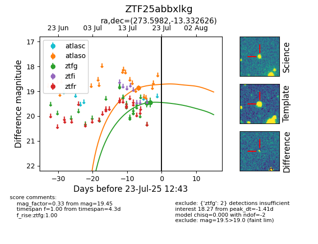

Target ZTF25abbxlkg at 2025-07-23 12:43, see:
FINK: fink-portal.org/ZTF25abbxlkg
Lasair: lasair-ztf.lsst.ac.uk/objects/ZTF25abbxlkg
ALeRCE: alerce.online/object/ZTF25abbxlkg
alt names
ZTF25abbxlkg (ztf,fink)
coordinates:
equatorial (ra, dec) = (273.5982,-13.33263)
galactic (l, b) = (16.8624,+1.96101)
photometry
last atlaso=18.87, ztfg=19.45
1 atlaso, 2 ztfg detections
